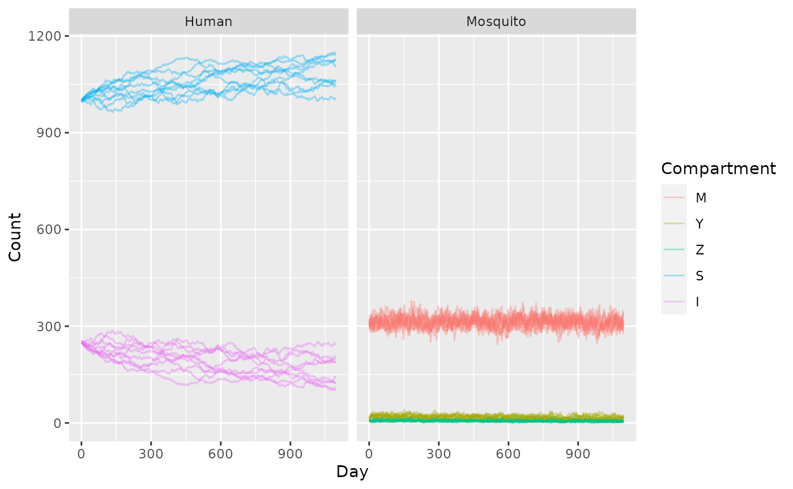

In MicroMoB, the goal is to get various models fill in a set of component interfaces; if you want to write a new aquatic model, you fill in the interface and then plug into the existing framework, and let the simulation handle the rest! Here we present the most simple case of a Ross-Macdonald mosquito model linked to a trace derived (exogeneously forced) model of emergence, and a SIS (Susceptible-Infectious-Susceptible) human model. This is in fact quite similar to the “classic” Ross-Macdonald (though best written by Aron and May) model.
Endemic equilibrium solution
First we will write out the closest approximating ODE model and derive an endemic equilibrium to check that our discrete time models are approximately correct.
Let the human component be described by:
\[\begin{equation} \dot{S} = -b fqZ (1/N) S + rI \\ \dot{I} = b fqZ (1/N) S - rI \end{equation}\]
here, \(fqZ\) is the EIR, and \(N\) is the total human population size. If we know the values of \(S\) and \(I\) we can solve for the density of infectious mosquitoes required to give those values at endemic equilibrium:
\[\begin{equation} Z = \frac{rIN}{bfqS} \end{equation}\]
Now let us look at the system of ODEs describing the mosquitoes. Actually they are delay differential equations (DDE) to incorporate the delay between infection and infectiousness:
\[\begin{equation} \dot{M} = \lambda - gM \\ \dot{Y} = fq\kappa (M-Y) - gY \\ \dot{Z} = fq\kappa_{t-EIP} (M_{t-EIP} - Y_{t-EIP}) e^{-gEIP} - gZ \end{equation}\]
We are only interested in equilibrium solutions, where all derivatives are zero and the state variables are the same for all time, so we can ignore the delays:
\[\begin{equation} 0 = \lambda - gM \\ 0 = fq\kappa (M-Y) - gY \\ 0 = fq\kappa (M - Y) e^{-gEIP} - gZ \end{equation}\]
Plug our solution for \(Z\) into the last equation to get an expression for \(M-Y\) in terms of known quantities:
\[\begin{equation} M-Y = \frac{gZ}{fq\kappa e^{-gEIP}} \end{equation}\]
Now plug \(M-Y\) into the second equation to get an expression for \(Y\), after some simplification we get:
\[\begin{equation} Y = \frac{Z}{e^{-gEIP}} \end{equation}\]
To get \(M\), add \((M-Y) + Y\) and simplify to get:
\[\begin{equation} M = \frac{Z(g + fq\kappa)}{fq\kappa e^{-gEIP}} \end{equation}\]
Finally plug this into the first equation to solve \(\lambda\):
\[\begin{equation} \lambda = g \left( \frac{Z(g + fq\kappa)}{fq\kappa e^{-gEIP}} \right) \end{equation}\]
We can set up some model parameters and calculate numeric solutions for those values.
# mosquito parameters
f <- 0.3
q <- 1
eip <- 10
lifespan <- 10
g <- 1/lifespan
# human parameters
b <- 0.55
c <- 0.15
r <- 1/200
S <- 1e3
I <- 250
N <- S + I
# transmission parameters
kappa <- (I/N)*c
# equilibrium solutions
Z <- (r*I*N) / (b*f*q*S)
Y <- Z / exp(-g*eip)
M <- (Z*(g + (f*q*kappa))) / (f*q*kappa*exp(-g*eip))
lambda <- g*MMicroMoB simulation
Now let’s set up a simulation with only a single patch and only a single human stratum.
patches <- 1
nstrata <- 1
tmax <- 365 * 3
# human parameters
theta <- diag(nstrata)
H <- N
X <- I
# mosquito parameters
p <- 1 - 1/lifespan
psi <- diag(patches)
# for our stochastic simulation, the state must be integers
M <- ceiling(M)
Y <- ceiling(Y)
Z <- ceiling(Z)Now we run the simulation, and write output.
sto_out <- mclapply(X = 1:10, FUN = function(runid) {
mod <- make_MicroMoB(tmax = tmax, p = patches)
setup_humans_SIS(mod, stochastic = TRUE, theta = theta, H = H, X = X, b = b, c = c, r = r)
setup_aqua_trace(mod, stochastic = TRUE, lambda = lambda)
setup_mosquito_RM(mod, stochastic = TRUE, f = f, q = q, eip = eip, p = p, psi = psi, M = M, Y = Y, Z = Z)
setup_alternative_trace(mod)
setup_visitor_trace(mod)
# matrices to hold output
mosquito_out <- matrix(data = 0, nrow = tmax, ncol = 4, dimnames = list(NULL, c("Day", "M", "Y", "Z")))
mosquito_out[, "Day"] <- 1:tmax
human_out <- matrix(data = 0, nrow = tmax, ncol = 3, dimnames = list(NULL, c("Day", "S", "I")))
human_out[, "Day"] <- 1:tmax
# run it
while (mod$global$tnow <= tmax) {
compute_bloodmeal(model = mod)
step_aqua(model = mod)
step_mosquitoes(model = mod)
step_humans(model = mod)
mosquito_out[mod$global$tnow, 2:4] <- c(mod$mosquito$M, mod$mosquito$Y, mod$mosquito$Z)
human_out[mod$global$tnow, 2:3] <- c(mod$human$H - mod$human$X, mod$human$X)
mod$global$tnow <- mod$global$tnow + 1L
}
mosquito_out <- as.data.table(mosquito_out)
mosquito_out <- melt(mosquito_out, id.vars = "Day", variable.name = "Compartment", value.name = "Count")
mosquito_out[, "Species" := "Mosquito"]
human_out <- as.data.table(human_out)
human_out <- melt(human_out, id.vars = "Day", variable.name = "Compartment", value.name = "Count")
human_out[, "Species" := "Human"]
out <- rbind(mosquito_out, human_out)
out[, "Run" := as.integer(runid)]
return(out)
})
sto_out <- do.call(rbind, sto_out)
ggplot(sto_out) +
geom_line(aes(x = Day, y = Count, color = Compartment, group = interaction(Run, Compartment)), alpha = 0.35) +
facet_grid(. ~ Species)